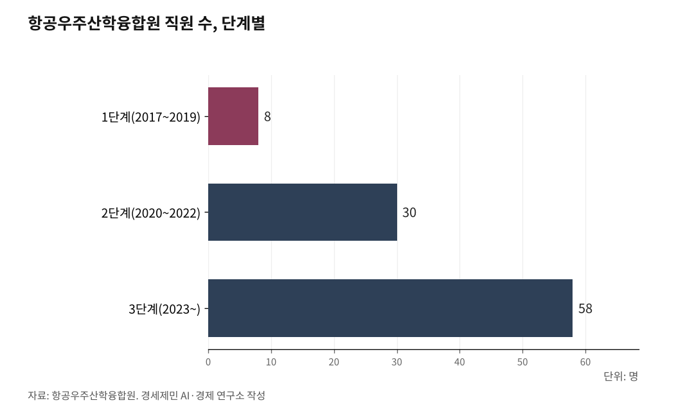

[인천해양산업, 생존기로⑰] 항공우주산학융합원 9년, 해양도 할 수 있다
8명으로 시작해 58명, 1637억원… 인하대·인천시·공항공사 3자 협력의 9년
MRO에서 UAM·방산·우주까지 넓힌 항공, 해양은 열 갈래 시장이 기다린다
하드웨어 다음은 소프트웨어다, 국내 성공 사례가 답한다
인천항 컨테이너 356만TEU(2024년) 국내 2위, 인천공항 화물 295만톤(2025년) 세계 3위, Sea-Air 복합운송 11만8000톤(2024년) 역대 최대, 해상풍력 6.2GW 추진 중. 인천에 강점은 있다. 그 강점을 살릴 연구기관과 대학과 인력양성 체계가 없다.

같은 인천 송도에서 바로 그 소프트웨어를 9년째 채워온 곳이 있다. 항공 분야에서다. 항공우주산학융합원이 2017년 직원 8명으로 출발해 2025년 58명, 누적 사업비 1637억원 규모로 성장했다. 항만이 아니라 공항이고 해양이 아니라 항공이지만, 인천에서 소프트웨어 공백을 메운 유일한 성공 사례다.
1. 8명에서 58명, 소프트웨어를 채운 9년
항공우주산학융합원(2021년 인천산학융합원에서 명칭 변경)은 2017년 비영리 사단법인으로 출발했다. 산업통상자원부가 주무관청이다. 산업집적활성화법 제22조의4(산학융합지구 지정)와 제22조의5(지원)가 법적 근거다. 인천시의회가 설립·운영 지원 조례를 제정해 행재정적 토대를 깔았다.
1단계(2017~2019)는 1본부 2팀, 직원 8명, 예산 35억원이었다. 2단계(2020~2022)에서 1본부 3팀 1센터, 30명, 누적 750억원으로 늘었다. 3단계(2023~현재)는 1본부 4팀 5센터, 58명, 누적 1637억원이다. 초기 자본 약 600억원에서 9년 만에 2.7배로 불어났다.
R&D 173건, 교육생 8637명, 기업지원 321건, 특허 47건, 기술이전 23건, 일자리 1247명을 기록했다. 글로벌 MRO 기업 3곳을 유치했고, 항공 부품 인증 기업 15곳을 키워 수출 증가율 연평균 12%를 달성했다. 2025년 매출액은 143억5000만원으로 전년보다 72% 늘었다.
2025년 5월 정석항공과학고에 항공실험실습동이, 6월 30일 송도 융합원 안에 엔진연구실습동이 준공됐다. 대한항공이 기증한 PW4098 엔진(보잉777 탑재, 최대 출력 9만8000마력)으로 현장 교육을 한다. 기초교육에서 고급 기술인력까지 이어지는 사다리형 교육체계가 완성됐다.
인천 항공산업에서는 "강점은 있는데 연구가 없다"는 말이 더 이상 통하지 않는다. 해양에는 아직 이 역할을 하는 곳이 없다.

2. 3자 협력과 재원 다각화, 9년의 공식
인하대학교가 송도 지식정보산업단지 안에 용지 1만6524㎡와 건물 연면적 2만164㎡를 내놨다. 인천시가 정책과 예산을 맞췄다. 인천국제공항공사가 항공산업 네트워크를 연결했다. 대학+지자체+공기업 3자 협력이다.
초기 자본 약 600억원은 출연금(산업통상자원부) 117억원, 지방비(인천시) 245억원, 민간 현금 20억원, 민간 현물(인하대 용지 등) 218억원으로 구성됐다. 9년간 재원 비율은 정부 R&D 약 40%, 지자체 약 20%, 민간 약 25%, 수익 사업 약 15%로 다각화됐다.
이사회(분기 1회), 운영위원회(월 1회), 분과위원회(수시)로 의사결정 구조를 세웠다. 기업 파트너 84곳(대기업 2곳, 중견 15곳, 중소 67곳), 경제단체(인천상공회의소·인천경총·한국무역협회 인천본부), 시민사회(인천평화복지연대·인천YMCA)가 참여했다.
브레머하펜의 프라운호퍼 IWES, 에스비에르의 자치항만, 험버의 ORE Catapult, 타이중의 TIPC가 각각 대학·지자체·산업과 짝을 이뤄 성장한 구조와 같다. 항공우주산학융합원은 이 공식을 인천에서 실증했다.
3. 해양이 열어야 할 시장
항공우주산학융합원은 항공정비(MRO)에서 출발해 도심항공교통(UAM), 방산, 우주, AI 결합 항공기술, 데이터를 활용한 안전관리까지 영역을 넓혔다. 9년에 걸쳐 한 분야에서 여러 분야로 확장한 경로다.
해양산학융합센터 앞에는 처음부터 열 갈래 시장이 놓여 있다. 해양산업(해상풍력 O&M·블루카본·해양치유), 항만산업(스마트항만·자율운항선박·항만 자동화), 수산업(스마트양식·수산물 가공유통·수산 R&D), 물류산업(Sea-Air-Rail 복합물류·환황해 카페리·한중 열차페리), 스마트해양(해양 AI·디지털트윈·해양 빅데이터), 친환경 선박(전기컨테이너선·IMO 환경규제 대응), 남북교류(TKR 서해선·개성 물류 관문), 환황해경제권(대중국 물동량 63.7%·산둥·요동 연계), 해운과 UAM의 결합까지.
항공우주산학융합원이 9년에 걸쳐 넓힌 경로를 해양은 설계 단계에서부터 담아야 한다는 분석이 용역보고서에 담겼다. 연구할 주제가 많다는 것은 연구 거점이 더 절실하다는 뜻이다.
4. 수요처가 없다, 그래서 거점이 먼저다
항공 MRO는 인천국제공항이라는 확정된 수요처가 이미 있었다. 2025년 여객 7407만명, 화물 295만톤을 처리한 세계 3위 공항(ACI, 2024년 기준)이 바로 옆에서 돌아가고 있었다. 기업이 먼저 모이고 융합원이 뒤따른 구조다.
해양은 순서가 거꾸로다. 인천 해상풍력 6.2GW는 아직 발전단지 건설 전이다. 전기컨테이너선 시장은 열리는 중이다. 남북교류는 재개 시점을 알 수 없다. 수요처가 만들어지기 전에 거점을 먼저 세워서 산업을 끌어와야 한다.
용역보고서는 이 차이를 짚으면서 "수요처가 없을 때 거점을 먼저 만든 사례가 유럽에 있다"고 분석했다. 에스비에르는 2002년 해상풍력 프로젝트가 시작되기 전부터 항만 인프라를 준비했고, 브레머하펜는 제조 공장이 떠난 뒤에도 연구소를 남겨 도시를 지켰다.
5. 조례가 출발선이다
항공우주산학융합원이 9년 전 출발선에 섰을 때 갖춘 것은 세 가지였다. 법적 근거(산업집적활성화법+인천시 조례), 3자 협력(인하대+인천시+공항공사), 초기 자본(약 600억원)이다.
해양은 아직 출발선 전이다. 인천시가 (가칭)해양수산진흥원 설립 타당성 연구용역을 추진하고 있다. 그러나 인천시 해양산업 육성 조례에는 센터 설치·운영을 직접 규정하는 조항이 없다.
부산은 해양과학기술 육성 조례 제8조에 센터 설치·운영을 명시한 뒤 국비 209억원을 확보해 동삼 협력센터(총사업비 322억원)를 열었다. 조례가 국비의 근거가 됐다.
항공우주산학융합원 9년이 남긴 기록은 분명하다. 3자 협력과 법적 근거와 단계적 성장이 맞물려 8명짜리 조직이 58명, 1637억원 규모로 자랐다. MRO 한 분야에서 UAM·방산·우주까지 확장했다. 인천 해양 앞에는 해양·항만·수산·물류·에너지·남북교류·환황해경제권까지 항공보다 넓은 시장이 놓여 있다. 항공에서는 소프트웨어를 만들었다. 해양에서는 아직 못 만들었다. 인천해양항만수산진흥원(인천해양산학융합센터) 설립 경로는 이 시리즈 마지막 편에서 다룬다.
참고문헌
·"기관 및 사업 소개 Ver.11.5", 항공우주산학융합원, 2025. https://www.iiaci.or.kr/
·"인천산학융합지구 조성사업 1차년도 연차보고서", 인하대학교, 2017.2.
·"인천시, MRO 엔진연구실습동 준공", 이데일리, 2025.6.30. https://www.edaily.co.kr/News/Read?newsId=03883526642206968&mediaCodeNo=257
·"인천공항, 2025년 여객 실적 7407만명…개항 이후 최다", 인천투데이, 2026.1.26. https://www.incheontoday.com/news/articleView.html?idxno=314444
·"인천공항, 개항이후 최초로 국제여객순위 세계 3위 달성", 인천국제공항공사, 2025.4.20. https://www.airport.kr/bbs/co_ko/84/138676/artclView.do
·"인천 해양수산 산학연 거점 조성 타당성 및 기본계획 수립 보고서", 인하대학교 경기인천씨그랜트센터, 2026.3.
·산업집적활성화 및 공장설립에 관한 법률 제22조의4, 제22조의5, 국가법령정보센터. https://www.law.go.kr
·해양수산과학기술 육성법 제16조, 국가법령정보센터. https://www.law.go.kr
·부산광역시 해양과학기술 육성 및 지원에 관한 조례 제8조, 국가법령정보센터. https://www.law.go.kr
※ 이 기사는 AI 프로그램 클로드를 활용해 작성했습니다.
#항공우주산학융합원 #인천해양산업 #3자협력 #산학융합 #해상풍력O&M #스마트항만 #전기컨테이너선 #환황해경제권 #남북교류 #생존기로